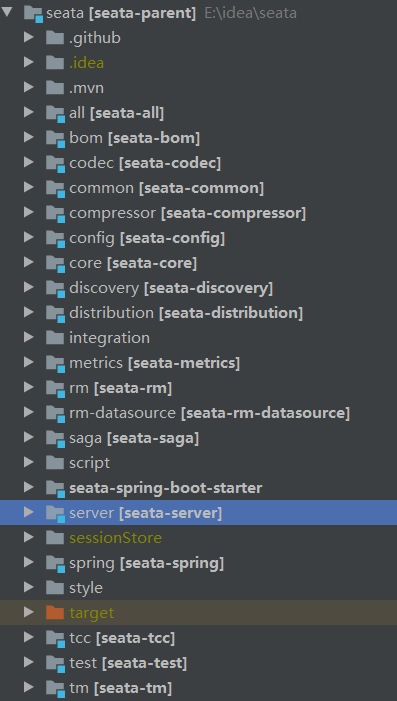
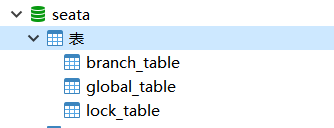
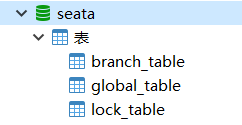
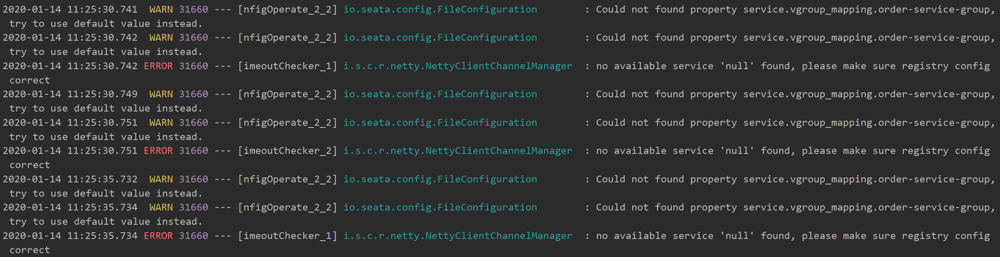

Seata 是一款开源的分布式事务解决方案，致力于提供高性能和简单易用的分布式事务服务。Seata 将为用户提供了 AT、TCC、SAGA 和 XA 事务模式，为用户打造一站式的分布式解决方案。
如果有疑惑的可以去看看官方样例是如何使用的，依样画葫芦总是会简单很多:smile:
下载启动seata 在 Seata 克隆代码，然后用idea打开启动

seata-server模块 /server/src/main/resources/register.conf 1 2 3 4 5 6 7 8 9 10 11 12 13 14 15 16 17 18 19 20 21 22 23 24 25 registry { type = "nacos" nacos { serverAddr = "localhost" namespace = "public" cluster = "default" } } config { type = "file" nacos { serverAddr = "localhost" namespace = "public" } file { name = "file.conf" } }
这里使用 nacos 作为注册中心，并采用 file.conf 配置的形式
/server/src/main/resources/file.conf 1 2 3 4 5 6 7 8 9 10 11 12 13 14 15 16 17 18 19 20 21 22 23 24 25 26 27 28 29 30 31 32 33 34 35 service { vgroup_mapping.my_test_tx_group = "default" service.vgroup_mapping.order-service-fescar-service-group="default" service.vgroup_mapping.account-service-fescar-service-group="default" default.grouplist = "127.0.0.1:8091" disableGlobalTransaction = false } store { mode = "db" file { dir = "sessionStore" } db { datasource = "dbcp" db-type = "mysql" driver-class-name = "com.mysql.jdbc.Driver" url = "jdbc:mysql://116.62.14.208:3306/seata" user = "root" password = "123456" } }
创建seata数据库 seata 选择 store.mode = “db”，则需要创建数据库。
seata 所需的三个数据库，对应的sql的文件在根目录下的 /script/server/db/mysql.sql


然后就可以启动 seata-server，当然在此之前已经将nacos启动了，地址为localhost;8848
配置微服务 Account-Server account-server 、order-server 和 storage-server 差不多，就只展示一个的配置，
pom.xml 1 2 3 4 5 6 7 8 9 10 11 12 13 14 15 16 17 18 19 20 21 22 23 24 25 26 27 28 29 30 31 32 33 34 35 36 37 38 39 40 41 42 43 44 45 46 47 48 49 50 51 52 53 54 55 56 57 58 59 60 61 62 63 64 65 66 67 68 69 70 71 72 73 74 75 76 77 78 79 80 81 82 83 84 85 86 87 88 89 90 91 92 93 94 95 96 97 98 99 100 101 102 103 104 105 106 107 108 <? xml version="1.0" encoding="UTF-8" ?> <project xmlns ="http://maven.apache.org/POM/4.0.0" xmlns:xsi ="http://www.w3.org/2001/XMLSchema-instance" xsi:schemaLocation ="http://maven.apache.org/POM/4.0.0 https://maven.apache.org/xsd/maven-4.0.0.xsd" > <modelVersion > 4.0.0</modelVersion > <parent > <groupId > org.springframework.boot</groupId > <artifactId > spring-boot-starter-parent</artifactId > <version > 2.2.2.RELEASE</version > <relativePath /> </parent > <groupId > com.xiaotang</groupId > <artifactId > spring-account</artifactId > <version > 0.0.1-SNAPSHOT</version > <name > spring-account</name > <description > Demo project for Spring Boot</description > <properties > <java.version > 1.8</java.version > <spring-cloud.version > Hoxton.SR1</spring-cloud.version > <spring-cloud-alibaba-dependencies.version > 0.2.2.RELEASE</spring-cloud-alibaba-dependencies.version > <seata.version > 1.0.0</seata.version > <spring-cloud-alibaba-seata.version > 2.1.1.RELEASE</spring-cloud-alibaba-seata.version > </properties > <dependencies > <dependency > <groupId > org.springframework.boot</groupId > <artifactId > spring-boot-starter-web</artifactId > </dependency > <dependency > <groupId > org.mybatis.spring.boot</groupId > <artifactId > mybatis-spring-boot-starter</artifactId > <version > 2.1.1</version > </dependency > <dependency > <groupId > org.springframework.cloud</groupId > <artifactId > spring-cloud-starter</artifactId > </dependency > <dependency > <groupId > org.springframework.cloud</groupId > <artifactId > spring-cloud-starter-alibaba-nacos-discovery</artifactId > </dependency > <dependency > <groupId > io.seata</groupId > <artifactId > seata-spring</artifactId > <version > ${seata.version}</version > </dependency > <dependency > <groupId > com.alibaba.cloud</groupId > <artifactId > spring-cloud-alibaba-seata</artifactId > <version > ${spring-cloud-alibaba-seata.version}</version > </dependency > <dependency > <groupId > org.springframework.boot</groupId > <artifactId > spring-boot-starter-test</artifactId > <scope > test</scope > <exclusions > <exclusion > <groupId > org.junit.vintage</groupId > <artifactId > junit-vintage-engine</artifactId > </exclusion > </exclusions > </dependency > <dependency > <groupId > commons-lang</groupId > <artifactId > commons-lang</artifactId > <version > 2.6</version > <scope > compile</scope > </dependency > <dependency > <groupId > org.springframework.cloud</groupId > <artifactId > spring-cloud-starter-feign</artifactId > <version > 1.4.7.RELEASE</version > </dependency > </dependencies > <dependencyManagement > <dependencies > <dependency > <groupId > org.springframework.cloud</groupId > <artifactId > spring-cloud-dependencies</artifactId > <version > ${spring-cloud.version}</version > <type > pom</type > <scope > import</scope > </dependency > <dependency > <groupId > org.springframework.cloud</groupId > <artifactId > spring-cloud-alibaba-dependencies</artifactId > <version > ${spring-cloud-alibaba-dependencies.version}</version > <type > pom</type > <scope > import</scope > </dependency > </dependencies > </dependencyManagement > <build > <plugins > <plugin > <groupId > org.springframework.boot</groupId > <artifactId > spring-boot-maven-plugin</artifactId > </plugin > </plugins > </build > </project >
修改 application.yml 文件 自定义事务组的名称 tx-service-group: account-service-group
application.yml 1 2 3 4 5 6 7 8 9 10 11 12 13 14 15 16 17 18 19 20 21 22 23 24 25 26 27 28 29 server: port: 8021 spring: application: name: account-server cloud: nacos: discovery: server-addr: 127.0 .0 .1 :8848 alibaba: seata: tx-service-group: account-service-group datasource: url: jdbc:mysql://localhost:3306/account?characterEncoding=utf8 driver-class-name: com.mysql.jdbc.Driver username: root password: 123456 mybatis: mapper-locations: classpath:/mapper/*.xml type-aliases-package: com.xiaotang.springaccount logging: level: org: springframework: boot: autoconfigure: ERROR
添加并修改 registry.conf 配置文件 主要是将注册中心改为 nacos
/src/main/resources/registry.conf 1 2 3 4 5 6 7 8 9 10 11 12 13 14 15 16 17 18 19 20 registry { type = "nacos" nacos { serverAddr = "localhost:8848" namespace = "public" cluster = "default" } } config { type = "file" nacos { serverAddr = "localhost:8848" namespace = "" cluster = "default" } }
添加并修改 file.conf 配置文件， 主要是修改自定义事务组名称
/src/main/resources/file.conf 1 2 3 4 5 6 7 8 service { vgroup_mapping.account-service-group="default" default.grouplist = "127.0.0.1:8091" disableGlobalTransaction = false }
vgroup_mapping.account-service-group=”default” 必须配置，不然会一直查找这个配置，找不到控制台会报ERROR，同一个事务组的名称必须一致，在这里所有微服务的事务组名称必须都是 account-service-group。
其他配置可以不写，找不到会使用默认配置

在启动类中取消数据源的自动创建 exclude = DataSourceAutoConfiguration.class，不去除就会报错。
com.xiaotang.springaccount.SpringAccountApplication; 1 2 3 4 5 6 7 8 9 10 @SpringBootApplication (exclude = DataSourceAutoConfiguration.class)@EnableFeignClients @EnableDiscoveryClient @MapperScan ("com.xiaotang.springaccount.dao" )public class SpringAccountApplication public static void main (String[] args) SpringApplication.run(SpringAccountApplication.class, args); } }
配置 DataSourceProxyConfig 使用 Seata 对数据源进行代理 com.xiaotang.springaccount.config.DataSourceProxyConfig 1 2 3 4 5 6 7 8 9 10 11 12 13 14 15 16 17 18 19 20 21 22 23 24 25 26 27 28 29 30 31 32 33 import io.seata.rm.datasource.DataSourceProxy;@Configuration public class DataSourceProxyConfig @Value ("${mybatis.mapper-locations}" ) private String mapperLocations; @Bean @ConfigurationProperties (prefix = "spring.datasource" ) public DataSource druidDataSource () return new DruidDataSource(); } @Primary @Bean public DataSourceProxy dataSourceProxy (DataSource dataSource) return new DataSourceProxy(dataSource); } @Bean public SqlSessionFactory sqlSessionFactoryBean (DataSourceProxy dataSourceProxy) throws Exception SqlSessionFactoryBean sqlSessionFactoryBean = new SqlSessionFactoryBean(); sqlSessionFactoryBean.setDataSource(dataSourceProxy); sqlSessionFactoryBean.setMapperLocations(new PathMatchingResourcePatternResolver() .getResources(mapperLocations)); sqlSessionFactoryBean.setPlugins(new Interceptor[]{new InsertInterceptor()}); sqlSessionFactoryBean.setTransactionFactory(new SpringManagedTransactionFactory()); return sqlSessionFactoryBean.getObject(); } }
使用 @GlobalTransactional 注解开启全局分布式事务 com.xiaotang.springaccount.service.AccountService 1 2 3 4 5 6 7 8 9 10 11 12 13 14 15 16 17 18 19 20 21 22 23 24 25 26 27 28 29 @Service public class AccountService @Autowired private AccountMapper accountMapper; @Autowired private OrdersClient ordersClient; @Autowired private StorageClient storageClient; public Integer add (Account account) return accountMapper.insert(account); } @GlobalTransactional @Transactional (rollbackFor = Exception.class) public Integer addTest (Account account, Integer status) ordersClient.add("banana" , 2 , 1 , account.getUsername()); storageClient.add("apple" , 3 ); Integer index = add(account); if (status == 0 ){ throw new RuntimeException("hello world" ); } return index; } }
给每个库都创建创建 undo_log 表（日志回滚表 ） ，文件在 seata/script/client/at/db/mysql.sql
1 2 3 4 5 6 7 8 9 10 11 12 13 14 CREATE TABLE IF NOT EXISTS `undo_log` ( `id` BIGINT (20 ) NOT NULL AUTO_INCREMENT COMMENT 'increment id' , `branch_id` BIGINT (20 ) NOT NULL COMMENT 'branch transaction id' , `xid` VARCHAR (100 ) NOT NULL COMMENT 'global transaction id' , `context` VARCHAR (128 ) NOT NULL COMMENT 'undo_log context,such as serialization' , `rollback_info` LONGBLOB NOT NULL COMMENT 'rollback info' , `log_status` INT (11 ) NOT NULL COMMENT '0:normal status,1:defense status' , `log_created` DATETIME NOT NULL COMMENT 'create datetime' , `log_modified` DATETIME NOT NULL COMMENT 'modify datetime' , PRIMARY KEY (`id` ), UNIQUE KEY `ux_undo_log` (`xid` , `branch_id` ) ) ENGINE = InnoDB AUTO_INCREMENT = 1 DEFAULT CHARSET = utf8 COMMENT ='AT transaction mode undo table' ;
启动服务功能演示
成功注册到seata
当我在添加完所有的数据后，最后抛出一个RuntimeException，就会看到order-server和storage-server 最后回滚了操作。
参考链接
-------------本文结束